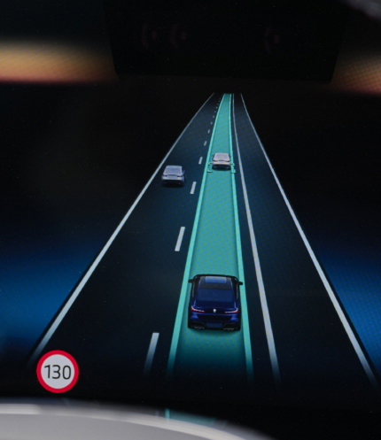
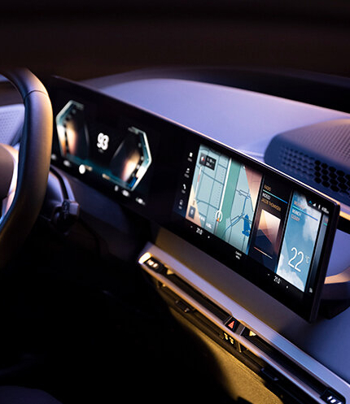
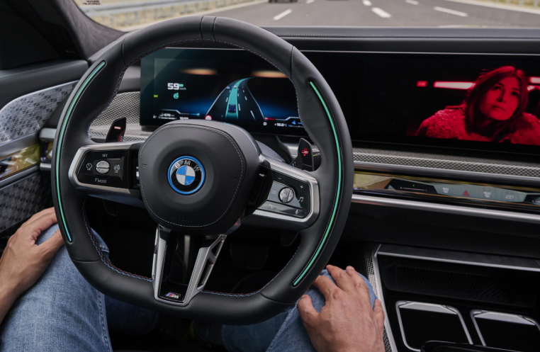
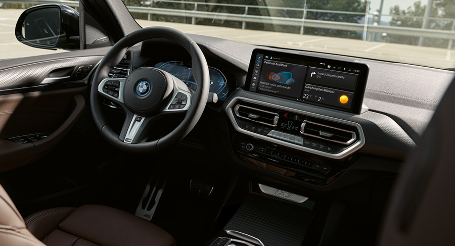
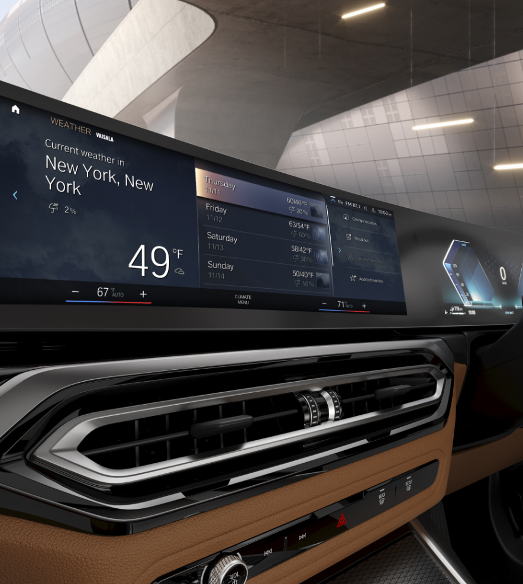
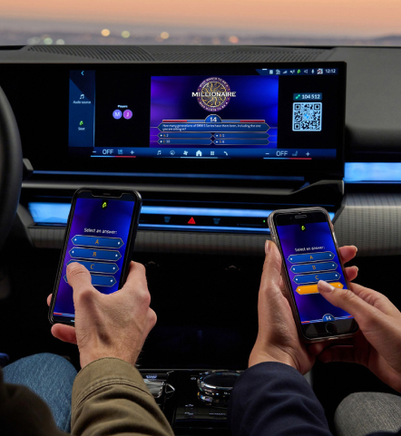
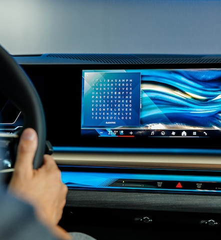

Digital Journey
Digital Arts meet Mobility
Following the successful launch of the digital QLOCKTWO EARTH as an optional widget in 2022, it is now undergoing a complete redesign that brings it even closer to the luxury brand's real timepieces. It will also become an integral part of the digital infotainment system of all vehicles with BMW operating system 8.5 and 9. BMW thus emphasizes its understanding that interior luxury is defined not only by materiality, but also by immaterial values such as aesthetics or the experience of art. The widget is designed as a digital version of the iconic QLOCKTWO EARTH and displays the time in five-minute increments on a word matrix. Illuminated dots in the corners of the widget provide additional information about the time to the exact minute. The language and appearance adapt dynamically to the driving mode and offer an alternative time experience to the classic BMW clocks.
Smart Assistance
The BMW Driving Companionship
Driving is often packed with tasks that require focus - checking vehicle status, finding parking, or managing routes.
What if your car could handle these? The BMW smart assistance features create a smoother, more enjoyable drive.
-

-
Navigating Traffic with Real-Time Awareness
From sudden traffic jams to locating nearby charging points, urban driving can be challenging. BMW Maps equips drivers to handle this seamlessly, featuring real-time traffic updates and dynamic rerouting to keep drivers continuously informed of changing road conditions and ensure they take the quickest and most efficient route to their destination.
For electric vehicle drivers, the Connected Charging feature within BMW Maps takes this one step further, offering guidance to optimal charging locations along the route. BMW Maps integrates smoothly with the vehicle's head-up display, keeping essential information in view and the driver's attention firmly on the road ahead. This intuitive technology creates a smoother, more predictable journey - fewer surprises, less time spent waiting, and greater driving confidence.
-
Facing the Road Ahead with a Smart Driving Assistant
Long commutes, heavy traffic, and the demands of highway driving can easily lead to fatigue. Constant attention to speed, lane changes, and positioning can make daily travel a tiring task. Driving Assistant Professional offers valuable support for these common challenges by taking over routine tasks on the motorway, such as adjusting speed, keeping distance, and assisting with lane changes. The innovative Active Lane Change Assistant with gaze confirmation makes lane changes more intuitive than ever: drivers simply tap the turn signal and glance at the side mirror in the intended direction, while integrated cameras track their eye movement to confirm the manoeuvre. Once confirmed, the vehicle safely executes the lane change autonomously, keeping drivers engaged while reducing manual effort. The result? A smoother, more comfortable journey where drivers feel like they're sharing the workload with a capable Driving Assistant.
- 
BMW iDrive
- An Evolution of Control and Intelligent Connectivity
Since its debut in 2001, the BMW iDrive system has revolutionised how drivers connect with their vehicles. By constantly integrating advanced technology with intuitive design, BMW iDrive has set new benchmarks for connectivity, convenience, and driving pleasure, becoming the core of the BMW Intelligent Connected Vehicle ecosystem.
-
At the Heart of a Connected Driving Experience
The last few decades have seen a quantum leap in terms of development - not only in cars but in driving too. And it's not just in terms of technology: our understanding of modern-day mobility has changed as well. Driving is about so much more than just steering, accelerating and braking. Far more, it's connected, designed for dynamics and comfort and therefore increasingly automated. Cars now have intelligent systems that allow them to adapt to the driver and their needs while also improving safety.
Since the 1990s the BMW Group has been investing in modern mobility and creating increasingly automated systems to help driver and vehicle become independent of each other. The road to autonomous driving is categorised into five levels and is being realised in several stages. With its current focus on Levels 3 and 4 - on the development of fully automated driving, in other words - the BMW Group is committed to advances in every area, contributing to the perfect driving experience every driver desires. - 
- 
- 
- 
-
A Journey of Innovation and Joy
For over two decades, BMW iDrive has evolved from a groundbreaking interface into an intelligent, connected digital ecosystem. Milestones like the head-up display in 2003 and online connectivity in 2008 highlight its transformative impact on driving experiences. Seamlessly synchronising with the My BMW App, BMW iDrive manages personalised settings, navigation, climate, and entertainment while learning driver habits to offer intuitive suggestions. With Over-the-Air updates and advanced Driving Assistance, it enhances safety, convenience, and engagement - redefining the connection between drivers and their vehicles. Reflecting the forward-thinking vision of BMW, iDrive blends functionality with human-centric design, setting new standards for cutting-edge automotive technology.